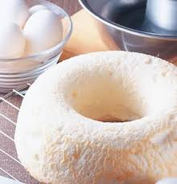
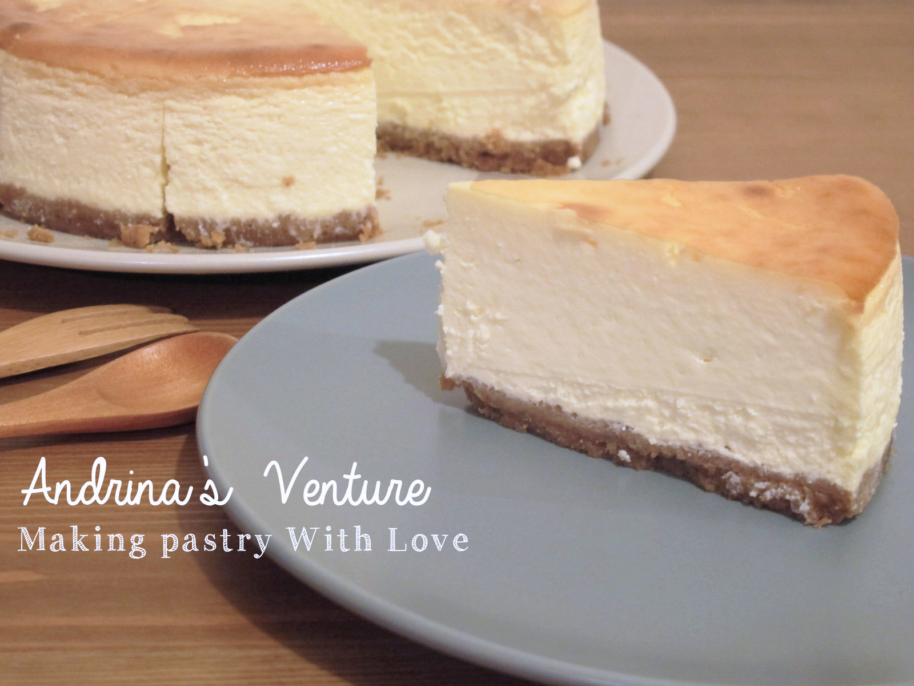
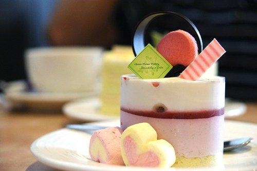

戚風蛋糕
蛋糕介紹: 是比較常見的一種基礎蛋糕，也是現在很受西點烘焙愛好者喜歡的一種蛋糕，像是生日蛋糕一般就是用戚風蛋糕來做底，所以說戚風蛋糕算是一個比較基礎的蛋糕。戚風蛋糕的做法很像分蛋的海綿蛋糕，其不同之處就是材料的比例，新手還可以加入發粉和塔塔粉，因此蛋糕的組織非常鬆軟。
內容物: 蛋、植物油、牛奶、鹽、低筋麵粉、細砂糖、海藻糖、白醋
價格 : NT$ 100

重油蛋糕
蛋糕介紹 : 也稱為磅蛋糕，是用大量的黃油經過攪打再加入雞蛋和麵粉製成的一種麵糊類蛋糕。因為不像上述幾種蛋糕一樣是通過打發的蛋液來增加蛋糕組織的鬆軟，所以重油蛋糕在口感上會比上面幾類蛋糕來得實一些，但因為加入了大量的黃油，所以口味非常香醇。比較常見的是在麵糊中加入一些水果或果脯，這樣可以減輕蛋糕的油膩味。
內容物: 蛋、瓜仁、鹽、低筋麵粉、細砂糖、泡打粉、起司粉、起酥油
價格 : NT$ 70

天使蛋糕
蛋糕介紹 : 天使蛋糕也是一種乳沫類蛋糕，就是蛋液經過攪打後產生的鬆軟的泡沫，所不同的是天使蛋糕中不加入一滴油脂，連雞蛋中含有油脂的蛋黃也去掉，只用蛋清來做這個蛋糕，因此做好的蛋糕顏色清爽雪白，故稱為天使蛋糕。
內容物: 蛋、檸檬汁、鹽、低筋麵粉、糖
價格 : NT$ 60

重奶酪蛋糕
蛋糕介紹 : 即奶酪的份量加得比較多，一般1個8寸的奶酪蛋糕，奶油奶酪的份量應該不少於250克。因為奶酪的份量比較多，所以重奶酪蛋糕的口味比較實，奶酪味很重，所以在製作時多會加入一些果醬來增加口味。
內容物: 蛋、孔雀餅乾、無鹽奶油、奶油乳酪、檸檬、細砂糖
價格 : NT$ 80

凍奶酪蛋糕
蛋糕介紹 : 是一種免烤蛋糕，會在奶酪蛋糕中加入明膠之類的凝固劑，然後放冰箱冷藏至蛋糕凝固，因為不經過烘烤，所以不會加入粉類材料。
內容物: 蛋、餅乾、黃油、奶油乳酪、果汁、細砂糖、蛋奶油、吉利丁
價格 : NT$ 80